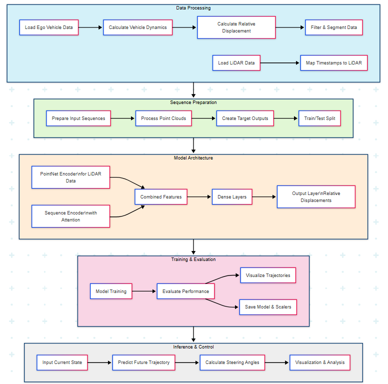

Overview
Introduction
CARLA Trajectory Prediction is a machine learning framework for predicting vehicle trajectories in the CARLA autonomous driving simulator. It provides a comprehensive solution for collecting data, training predictive models, and evaluating their performance in complex urban environments.
The framework leverages time series/deep learning techniques to predict future vehicle positions based on historical motion data and LiDAR point cloud information, enabling applications in autonomous vehicle planning, traffic simulation, and safety analysis.
System Architecture
{kind=link}
The framework consists of four main components:
Data Collection: Utilities for gathering vehicle data and LiDAR point clouds from CARLA
Data Processing: Tools for preprocessing, segmentation, and feature extraction
Model Training: Deep learning models based on sequence encoding and point cloud processing
Evaluation: Metrics and visualization tools for assessing prediction accuracy
Key Concepts
Relative Displacement Representation
Instead of predicting absolute positions, the framework uses relative displacements between consecutive frames. This approach provides several advantages:
More stable training dynamics
Invariance to absolute positioning
Better generalization across different scenarios
Reduced prediction drift over long sequences
Point Cloud Processing
LiDAR point clouds provide crucial context about the vehicle’s surroundings. The framework processes this data using:
Point cloud sampling with distance-based weighting
Normalization techniques for improved stability
PointNet-inspired architecture for feature extraction
Combined sequence and point cloud feature fusion
Trajectory Evaluation
The framework evaluates predictions using multiple metrics:
Mean displacement error (average across all time steps)
Final displacement error (accuracy of final predicted position)
Speed-based error analysis (performance at different speeds)
Path smoothness metrics (assessing trajectory naturalness)
Use Cases
Autonomous Vehicle Planning: Generate predicted trajectories for surrounding vehicles
Traffic Simulation: Create realistic vehicle behaviors in simulated environments
Safety Analysis: Evaluate potential collision scenarios
Driver Behavior Modeling: Learn patterns from human driving data
Research & Development: Benchmark and improve trajectory prediction algorithms
Technology Stack
The framework is built using:
TensorFlow/Keras: Deep learning model architecture and training
NumPy/Pandas: Data processing and manipulation
scikit-learn: Feature scaling and preprocessing
Matplotlib/Plotly: Visualization and analysis tools
CARLA Simulator: Data generation and simulation environment